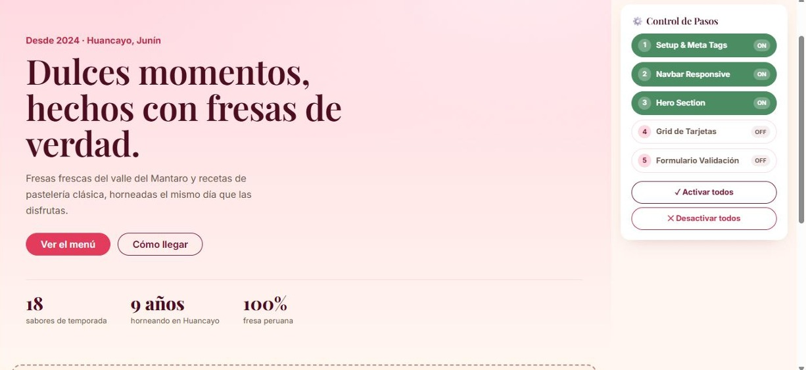
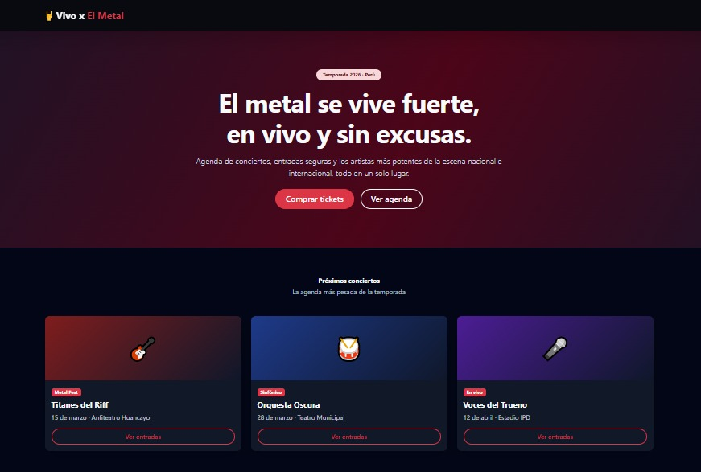
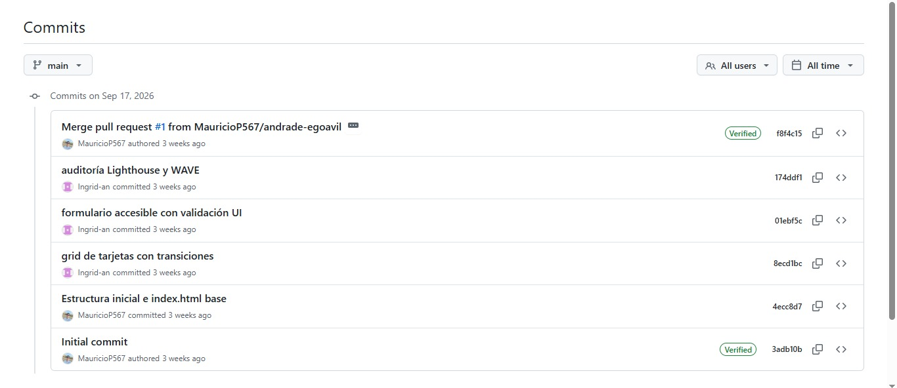

Bitácora de Aprendizaje ·
Temas tratados
Integración híbrida de Bootstrap 5 y Tailwind CSS, resolución de conflictos de especificidad CSS, componentes dinámicos UI, optimización SEO mediante meta tags y gestión de proyectos mediante Git Flow.
¿Qué aprendí?
- Arquitectura Híbrida (Bootstrap + Tailwind): cómo convivir ambos frameworks resolviendo conflictos de especificidad (como la corrección del .collapse en la navbar) y combinando el sistema de rejilla de Bootstrap con utilidades de Tailwind (backdrop-blur, shadow-lg).
- Estrategia Git Flow en Equipo: trabajo colaborativo avanzado mediante ramas (dev/integrante), apertura de Pull Requests (PR), revisión de código (code review) y resolución de conflictos antes del merge.
- Componentes e Interacción: construcción de paneles de control por pasos con toggles dinámicos y validación visual de formularios (is-invalid, valid-feedback).
Laboratorio / Práctica
- Práctica Individual: landing page "La Fresita" con panel de control por pasos e interruptores ON/OFF para activar/desactivar secciones.
- Práctica Grupal: portal de eventos "Vivo x El Metal" (agenda, tickets y artistas) desarrollado en equipo mediante Git Flow y resolución de Pull Requests.
Herramientas y Validaciones
- VS Code como entorno de desarrollo.
- GitHub: Pull Requests y Code Review.
- Lighthouse, WAVE y W3C Validator.
Evidencias


